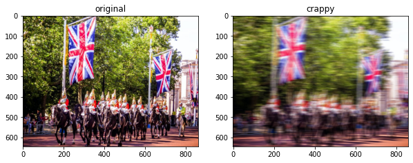

hr_path = Path('test/imgs')
crappy_path = Path('test/crappy')
files_hr = get_image_files(hr_path)fastai-breadcrumbs.core
Functions for fastaibreadcrumbs.
Setting kaggle data on local machine
setup_data
setup_data (user:str, dataset:str, install='')
Get a path to data for the user's dataset, downloading it if needed
This function is similar to the setup_comp function in “fastkaggle” which will download the dataset from kaggle and unzip it to your local machine if it’s not there already. setup_data accepts the user name (which is the userid tagged to that dataset which you want to download) and the dataset name. You may also pass a library name to the install argument separated by space. Doing so will install the required libraries on your machine (by default it’s blank which means that no library needs to be installed).
Be sure to have setup a kaggle API for your username and have the kaggle.json downloaded to youtr local machine before using this function.
For example when you do the following–>
setup_data('sapal6', 'superresolution')The output would be
Path('superresolution/busystreet')Crappify your data
Sometimes we need to simulate motion blur. We can do this by using numpy to create a small window of a specific size which can be moved place above an image and then move it around the image and distort the pixels in a particular direction which in effect will simulate a camera shake in a particular direction. At the very basic level this “moving a window around and image and applyiung motion blur” is matrix multiplication for which we can use opencv’s affine transformations followed by getRotationMatrix2D.
apply_motion_blur
apply_motion_blur (img, sz:int, angle:int)
apply motion blur in images at the givn angle and size of blur lines
apply_motion_blur is a lower level function which accepts an image (via img) and creates blur effect in that image as per the size of the blur (sz) which determines the strength of the blur and the angle in which the blur is to be applied.
The crappifier is the high level function that you would use to simulate motion blur for a single image.
Crappifier
Crappifier (dest, sz:int=30, angle:int=0)
apply motion blur on images
Crappifier.__call__
Crappifier.__call__ (file)
call the Crappifier on an image file
Given a file source (file) and the destination (dest) crappifier can create motion blur in the source image as per the size (sz) and the angle in which the blur needs to be applied.
files_hr[0].parents[1]Path('test/imgs')crappy_path/files_hr[0].relative_to(files_hr[0].parents[1])Path('test/crappy/test/test_img.jpg')Crappifier(crappy_path)(files_hr[0])show_plot
show_plot (fn_first:pathlib.Path, fn_second:pathlib.Path, nrow:int, szs:tuple)
show two images side by side for given number of rows and figure size
files_crappy = get_image_files(crappy_path)show_plot(files_hr[0], files_crappy[0], 1, (10, 10))
Parallely crappify images
When you need to crappify multiple images then save time by parallely crappifying images with crappify_imgs.
crappify_imgs
crappify_imgs (path_hr:pathlib.Path, path_crappy:pathlib.Path, sz=30, angle:int=0, n_workers=2)
parallely crappify images
Provide the path_hr for the source image and the path_crappy for destination, alongwith the sz for the strength of the blur and the angle of the blurs. n_workers will determine the number of cpus would be used.
crappify_imgs(hr_path, crappy_path, n_workers=8)Compare three images side by side
When you want to compare three images side by side then use compare_imgs. For example, you have a set of original images, crappified images, generated images and you want to compare them side by side.
compare_imgs
compare_imgs (origs:fastcore.foundation.L, crappys:fastcore.foundation.L, preds:fastcore.foundation.L, szs:tuple, nrow:int=9, fontsz=100)
compare 3 images side by side for given number of rows and figure size
Provide the origs list for the collection of the original images, crappys for the list of crappified images and the preds for the list of generated images. The plot sizes can be controlled with the szs tuple. The number of plots to be displayed can be controlled via nrow and the title size can be controlled by fontsz.
files_gen = get_image_files(Path('test/generated'))
files_gen(#1) [Path('test/generated/test/test_img.jpg')]For example –>
compare_imgs(files_hr, files_crappy, files_gen, (64, 64))
Quickly create dataloader for Unet
get_unet_dls
get_unet_dls (bs:int, source=None, blocks:tuple=(<function ImageBlock at 0x7fdfef76ba30>, <function ImageBlock at 0x7fdfef76ba30>), dl_type=None, getters=None, n_inp=None, get_items=None, get_y=None, get_x=None, splitter=None, item_tfms=None, batch_tfms=None, **kwargs)
function to create the datablock and the dataloader for Unet
This is a convenience function to setup a datablock and dataloader for a unet when the x and y blocks both are images. All the regular arguments which you pass to a regular fastai dataloader and dataset can be passed here.
item_tfms=Resize(128, method='squish')
batch_tfms=[*aug_transforms(size=64, min_scale=0.75), Normalize.from_stats(*imagenet_stats)]
dls=get_unet_dls(1, get_image_files('test'), get_y=lambda x: Path('test')/x.relative_to(Path('test')),
splitter=RandomSplitter(), item_tfms=item_tfms, batch_tfms=batch_tfms)dls.show_batch()Calculate feature loss
gram_matrix
gram_matrix (x)
function to calculate the gram matrix
FeatureLoss
FeatureLoss (m_feat, layer_ids, layer_wgts)
Class to calculate feature loss
Feature loss helps the network to compare the pixels of the target and the input image and check if the two images are the same.
We only need to pass the images through the netowrk once. So, we need to turn off the updates to the network weights. requires_grad_ is like asking the network “do not train”. We need to extract the features from our input image as well as the target image which we can compare later. To extract the features, we will use a simple pre-trained network like “vgg16”.
calc_ft_loss
calc_ft_loss (pretrained=True)
calculate the feature loss using the given architecture
The features are grabbed just before the grid size changes and the maxpooling layer in network is where the grid size change occurs. We iterate over the different layers of the network (children) and then grabbing the layer just before the maxpool layer (i-1) as this is where the grid size changes
Saving generated images
save_preds iterates through the predicitons one by one and then converts the predictions into images. After that it saves the image into the destination path.
save_preds
save_preds (dl, learn, dest)
Save away predictions
you will need to pass the dataloader, learner and the destination respectively.
Pushing notebook to kaggle
“fastkaggle” povides a way to push notebooks to kaggle from your local machine but this function deals with notebooks meant for competitions only and as such it takes care of data sources meant for a competition. For ceratin use case we need the ability to attach non-competition data sources to our kaggle notebook.
non_competition_nb_meta
non_competition_nb_meta (user, id, title, file, dataset=None, private=True, gpu=False, internet=True)
Get the dict required for a kernel-metadata.json file
non_competition_nb_meta('sapal6', 'my-notebook', 'My notebook', 'my-notebook.ipynb', dataset='some_data'){'id': 'sapal6/my-notebook',
'title': 'My notebook',
'code_file': 'my-notebook.ipynb',
'language': 'python',
'kernel_type': 'notebook',
'is_private': True,
'enable_gpu': False,
'enable_internet': True,
'keywords': [],
'dataset_sources': ['sapal6/some_data'],
'kernel_sources': []}import json
from pathlib import Pathpush_non_competition_notebook
push_non_competition_notebook (user, id, title, file, path='.', dataset=None, private=True, gpu=False, internet=True)
Push notebook file to Kaggle Notebooks